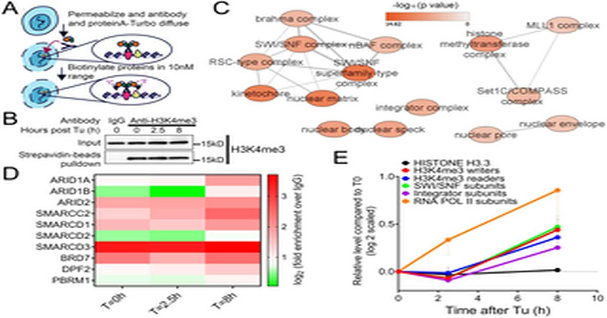

Субъединица RBBP5 комплекса гистон-метилтрансферазы служит центральным эпигенетическим регулятором динамики протеостаза
седа Кубра, Мишель Сан, Уильям Дион, Ю Биан, Ахмет Катак, Ханна Луонг, Хаокунь Ван, Инхун Пан, Цзя-цзюнь Лю, Айшвария Понна, Лицзюнь Лю, Ян Сипула, Цзянь-Хуа Луо, Майкл Дж.
Юрчак, Сильвия Лю, Бокай Чжу Протеостаз имеет важное значение для клеточного здоровья, поскольку его нарушение способствует старению, нейродегенерации и метаболическим нарушениям.
В то время как вышестоящие протеотоксические стресс-чувствительные и белковые механизмы в ER и цитозоле a